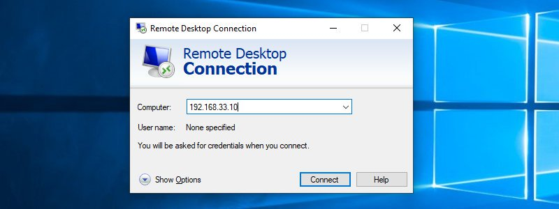
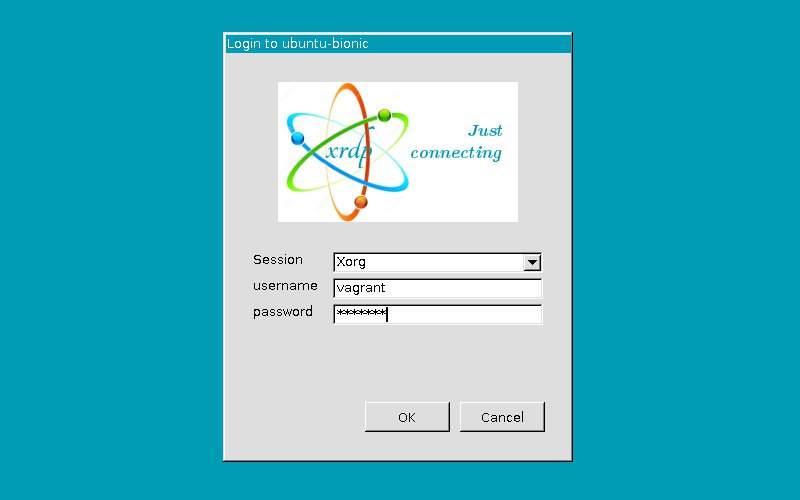
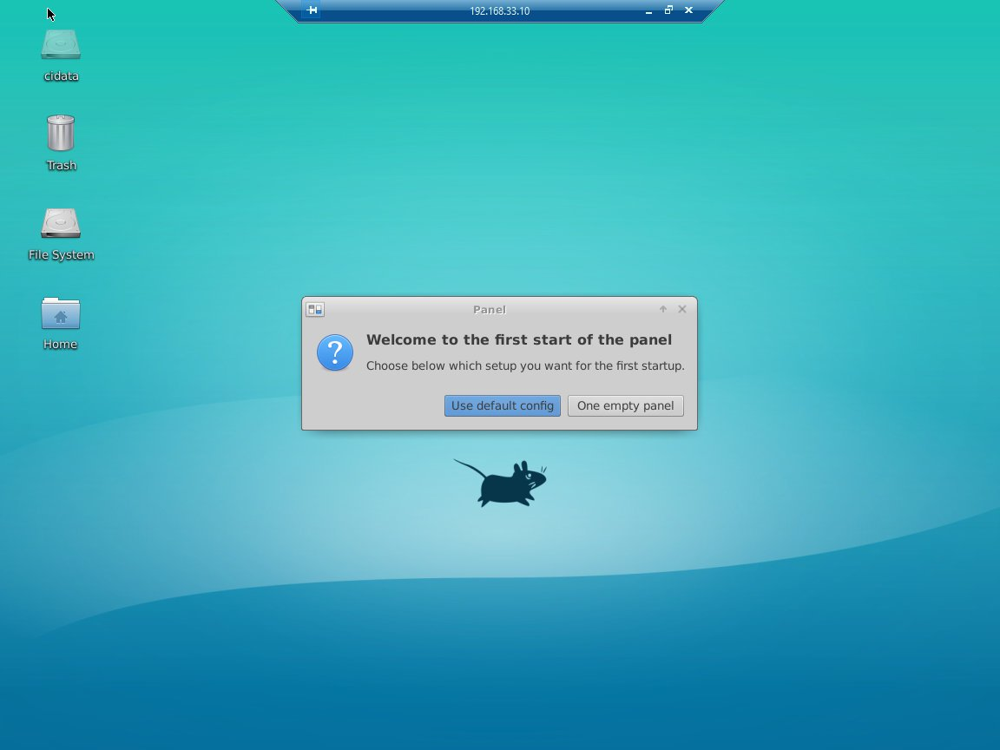

如何在 Ubuntu 18.04 上安装 Xrdp 服务器(远程桌面)
Xrdp 是 Microsoft 远程桌面协议 (RDP) 的开源实现，允许您以图形方式控制远程系统。使用 RDP ，您可以登录到远程计算机并创建一个真实的桌面会话，就像您已登录到本地计算机一样。
本教程介绍如何在 Ubuntu 18.04 上安装和配置 Xrdp 服务器。
如果您想要远程桌面访问的开源解决方案，请使用 VNC 。
安装桌面环境
通常， Linux 服务器没有安装桌面环境。我们的第一步是安装 X11 和一个轻量级桌面环境，它将充当 Xrdp 的后端。
Ubuntu 存储库中有几个桌面环境 (DE) 。我们将安装 Xfce 。它是一个快速，稳定和轻量级的桌面环境，非常适合在远程服务器上使用。
以具有 sudo 权限的用户身份键入以下命令，以在服务器上安装 Xfce ：
sudo apt update
sudo apt install xfce4 xfce4-goodies xorg dbus-x11 x11-xserver-utils
根据您的系统，下载和安装 Xfce 软件包需要一些时间。
安装 Xrdp
Xrdp 包在默认的 Ubuntu 存储库中可用。要安装它，请运行：
sudo apt install xrdp
安装过程完成后， Xrdp 服务将自动启动。您可以通过键入以下内容来验证 Xrdp 是否正在运行：
sudo systemctl status xrdp
输出看起来像这样：
● xrdp.service - xrdp daemon
Loaded: loaded (/lib/systemd/system/xrdp.service; enabled; vendor preset: enabled)
Active: active (running) since Sun 2019-07-28 22:40:53 UTC; 4min 21s ago
Docs: man:xrdp(8)
man:xrdp.ini(5)
...
配置 Xrdp
Xrdp 配置文件位于 /etc/xrdp 目录中。对于基本的 Xrdp 连接，我们只需要配置 Xrdp 即可使用 Xfce 。为此，请在文本编辑器中打开以下文件：
文件 /etc/xrdp/xrdp.ini
sudo nano /etc/xrdp/xrdp.ini
在文件末尾添加以下行：
exec startxfce4
保存文件并重新启动 Xrdp 服务：
sudo systemctl restart xrdp
配置防火墙
默认情况下， Xrdp 侦听 3389 所有接口上的端口。如果您在 Ubuntu 服务器上运行防火墙(您应该总是这样做)，则需要添加一个规则来启用 Xrdp 端口上的流量。
要允许从特定 IP 地址或 IP 范围访问 Xrdp 服务器，请在此示例 192.168.1.0/24 中运行以下命令：
sudo ufw allow from 192.168.1.0/24 to any port 3389
如果您想允许从任何地方进行访问(出于安全原因而非常不鼓励)，请运行：
sudo ufw allow 3389
为了提高安全性，您可以考虑将 Xrdp 设置为仅在 localhost 上侦听并创建一个 SSH 隧道，该隧道将安全地将来自本地计算机的端口 3389 上的流量转发到同一端口上的服务器。另一个安全选项是安装 OpenVPN 并通过专用网络连接到 Xrdp 服务器。
连接到 Xrdp 服务器
现在您已经设置了 Xrdp 服务器，现在是时候打开 Xrdp 客户端并连接到服务器了。
如果您是 Windows 用户，则可以使用默认 RDP 客户端。在 Windows 搜索栏中键入 “remote” ，然后单击“远程桌面连接”。这将打开 RDP 客户端。在计算机字段中输入远程服务器 IP 地址，然后单击“连接”。

在登录屏幕中输入您的用户名和密码，然后单击“确定”。

登录后，您应该会看到默认的 Xfce 桌面。它应该看起来像这样：

您现在可以使用键盘和鼠标从本地计算机开始与远程 XFCE 桌面交互。
结论
安装 Xrdp 服务器允许您使用易于使用的图形界面从本地桌面计算机管理 Ubuntu 18.04 服务器。